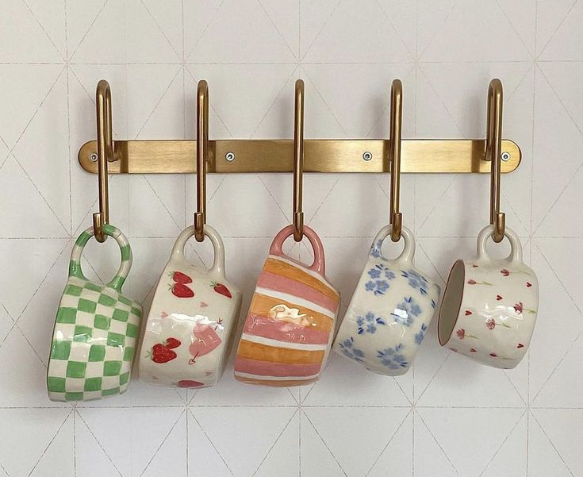
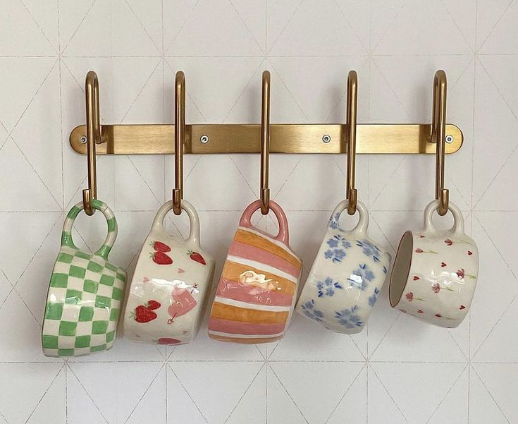

About Us
 

The Ray Store was founded to provide unique, high-quality handmade items. Our products are crafted by skilled artisans who put their heart and soul into each creation. We are committed to offering products that are not only beautiful but also ethically made and sustainable.
Our journey began with a passion for handmade goods and a desire to support artisans around the world. Each product in our store is a testament to the dedication and creativity of the artisans we work with. We believe in the power of handmade items to bring warmth and character to any space.
Join us in celebrating the art of handmade craftsmanship and discover the unique items that make The Ray Store special. Thank you for supporting our mission to bring beautiful, handmade goods to the world.